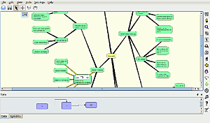

Semantik
Dieser Artikel wurde für die folgenden Ubuntu-Versionen getestet:
Ubuntu 16.04 Xenial Xerus
Ubuntu 14.04 Trusty Tahr
Zum Verständnis dieses Artikels sind folgende Seiten hilfreich:
Semantik  ist ein KDE-Programm, um auch komplexe Dokumente schnell mit Hilfe einer Mind Map zu erstellen. Die Mind Map wird dabei als Übersicht in Semantik angelegt, Knoten mit Inhalt versehen und daraufhin das Dokument generiert.
ist ein KDE-Programm, um auch komplexe Dokumente schnell mit Hilfe einer Mind Map zu erstellen. Die Mind Map wird dabei als Übersicht in Semantik angelegt, Knoten mit Inhalt versehen und daraufhin das Dokument generiert.
Semantik ist Nachfolger des KDE-Programms Kdissert. Kdissert und Semantik unterscheiden sich in einigen Punkten in der Funktionalität. So bietet Semantik zum Beispiel Tabellen als auch Diagramme als Knotentyp, kann aber noch kein Inhalte der Knoten in LaTeX-Beamerdokumente einbinden.
Hinweis:
Semantik wird weiterentwickelt, zur Installation der aktuellen Version muss das Programm jedoch von der Projektseite heruntergeladen und selbst kompiliert werden. Zur Vereinfachung kann es deshalb ratsam sein, für neue Projekte ein anderes Mind Map-Programm zu verwenden, wie z.B. des ebenfalls Qt-basierte VYM .
Installation¶
Es kann folgendes Paket installiert[1] werden:
semantik (universe)
 mit apturl
mit apturl
Paketliste zum Kopieren:
sudo apt-get install semantik
sudo aptitude install semantik
Benutzung¶
Empfohlene Vorgehensweise¶
|  |
| Semantik |
Man beginnt mit der Gedankensammlung und fügt man eigene Ideen als unabhängige Knoten hinzu. Anschließend verbindet man die Knoten, löscht unnütze Knoten und balanciert den entstehenden Baum aus. Für die Dokumenterstellung empfiehlt es sich, nicht mehr als 3-4 Knoten pro Ast und nicht mehr als 5 Unterebenen zu erstellen. Zu den Knoten können nun noch Inhalt (Text, Bilder, Diagramme, Tabellen) hinzugefügt werden. Bevor man das Dokument generieren lässt, legt man noch die Reihenfolge der Knoten fest.
Bedienung¶
Semantik kennt vier verschiedene Modi. Der Select-Modus wird gebraucht um Knoten zu erstellen, im Link-Modus können Verbindungen zwischen Knoten bearbeitet werden, im Sort-Modus legt man die Reihenfolge der Kindknoten des aktuellen Knotens fest und der Scroll-Modus dient der Navigation.
Um einen Knoten zu erstellen, genügt ein einfacher Doppelklick auf die freie Fläche, ein Doppelklick auf einen Knoten erstellt einen Kindknoten. Nachdem ein Knoten ausgewählt ist, genügt ein Druck auf ⏎ , um diesen zu editieren. Kindknoten können auch mit Strg + ⏎ und Geschwisterknoten mit ⇧ + ⏎ erzeugt werden. Im Select-Modus können Knoten nach belieben per Drag&Drop verschoben werden.
Im Link-Modus löscht ein Doppelklick auf eine Verbindung diese. Neue Verbindungen erzeugt man mit gedrückter  von Ursprungs- zu Zielknoten.
von Ursprungs- zu Zielknoten.
Die Reihenfolge der Kindknoten legt man fest, indem man zuerst auf den Elternknoten klickt und dann in der gewünschten Reihenfolge auf die erscheinenden Zahlen.
In jedem Modus kann man die Karte über die Zoomfunktion navigieren, wobei die Position des Mauszeigers festlegt, wohin herein gezoomt wird. Bei gedrückter
Strg +  oder im Scroll-Modus
Strg + kann die Karte verschoben werden.
oder im Scroll-Modus
Strg + kann die Karte verschoben werden.
Um die Übersicht zu erhöhen, können verschiedenen Knoten unterschiedliche Farben zugewiesen werden, oder diese mit Flags versehen werden. Außerdem kann man jederzeit die Karte über "Edit -> Reorganize the map" oder Strg + R neu organisieren lassen. Die "Linear view" gibt einen hierarchischen Überblick.
Will man in seine Knoten neben den Namen noch weitere Inhalte eintragen, wählte man zuerst über einen Klick mit der  auf den Knoten dessen Typ aus (Text, Diagramm, Tabelle oder Bild). Diagrammelemente werden ebenfalls mit einem Doppelklick erstellt, während Verbindungen mit
Strg + gezogen werden. Bestehende Verbindungen können über die gelben Punkte verändert werden. Ein Doppelklick auf eine Verbindung entfernt diese wieder. Zeilen und Spalten in Tabellen werden über die rechte Maustaste erstellt und können dann mit Inhalt gefüllt werden.
auf den Knoten dessen Typ aus (Text, Diagramm, Tabelle oder Bild). Diagrammelemente werden ebenfalls mit einem Doppelklick erstellt, während Verbindungen mit
Strg + gezogen werden. Bestehende Verbindungen können über die gelben Punkte verändert werden. Ein Doppelklick auf eine Verbindung entfernt diese wieder. Zeilen und Spalten in Tabellen werden über die rechte Maustaste erstellt und können dann mit Inhalt gefüllt werden.
Erstellen von Dokumenten¶
Ist man mit seiner Mind Map zufrieden, kann man über "Tools -> Generate" oder Strg + G ein Dokument aus dieser erstellen lassen. Hat man eine "S5 presentation" oder ein "Web document" (HTML-Seite) erstellt, steht die Vorschau zur Verfügung. Mit Variablen lassen sich verschiedene Dokumenteigenschaften einstellen. Um die Variablen zu setzen, darf kein Knoten ausgewählt sein und müssen diese unter "View -> Variables" aktiviert sein. Welche Variablen zur Verfügung stehen, sieht man in den Template-Dateien im Verzeichnis /usr/share/kde4/apps/semantik/templates/. Ein Beispiel für Variablen eines Dokumentes:
doc_author=Ubuntu User doc_place=Ubuntuland doc_title=Semantik babel=deutsch each_subsection_off=1 content_title=Beispiel
Bei der Erzeugung von PDFLaTeX und LaTeX Beamer Dokumenten wird eine tex-Datei erstellt, die erst noch kompiliert werden muss. Dazu erstellt das Programm ein Skript für waf im Ordner, indem man auch das Dokument erstellt hat. Hier führt man nun folgende Befehle[2] aus, um eine PDF-Datei zu erstellen und zu betrachten:
./waf configure ./waf build ./waf view
 Programmübersicht
Programmübersicht- Erstellt mit Inyoka
-
 2004 – 2017 ubuntuusers.de • Einige Rechte vorbehalten
2004 – 2017 ubuntuusers.de • Einige Rechte vorbehalten
Lizenz • Kontakt • Datenschutz • Impressum • Serverstatus -
Serverhousing gespendet von